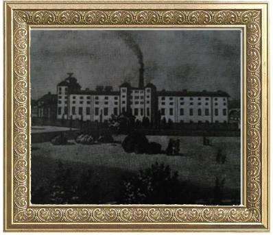

Промисловість міста
У 50-х роках XIX століття єдиним великим промисловим підприємством на Прикарпатті був добре оснащений і механізований на той час Тлумацький цукровий завод, побудований 1839 року Генріхом Дзедушицьким на території, де зараз розміщується школа-інтернат, подвір’я районного Будинку культури, Тлумацький районний суд, сільськогосподарський технікум бухгалтерського обліку.  1886 року була збудована залізниця Тлумач-Палагичі. Вона з’єднувала місто з важливою залізничною магістраллю Станіслав-Гусятин. Побудава цієї залізниці полегшила вивіз сільськогосподарської продукції та сировини з цього краю.1911 року в Тлумачі працювали спиртний завод, два цегельні заводи, два млини, ряд кустарних підприємств, гамарня Шписбаха, електроварня.Підприємливий Шпісбах налагоджує виготовлення сокир, лемішів до плугів та плужків, підкови. Їх радо купували господарі в Товмачі, Станіславі та в Львові.На початку ХХ ст. другом дивом стала місцева електровня, місцевий підприємець Францішек облаштував її у власному млені. 1906 року був створений кооперативний банк Тлумацького повіту, у 1909 році заснована ощадна каса.